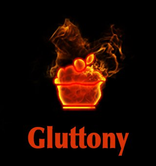

1 Corinthians 10:31 says, “Therefore, whether you eat or drink,
or whatever you do, do all to the glory of God.”
Chastity or self-control cures lust by controlling passion and leveraging that energy for the good of others.
Additional Bible references include: Psalm 78:17-19, Philippians 3:19-20, Proverbs 23:1-3, Proverbs 23:19-21 and 1 Corinthians 3:16-17.
Temperance cures gluttony by implanting the desire to be healthy, therefore making one fit to serve others.